407 Grafik-/Fontdateien. Größen und Formate sind technische Ausgaben derselben Motive. Alle Ressourcen liegen innerhalb dieses Ordners.
407 Assetdateien
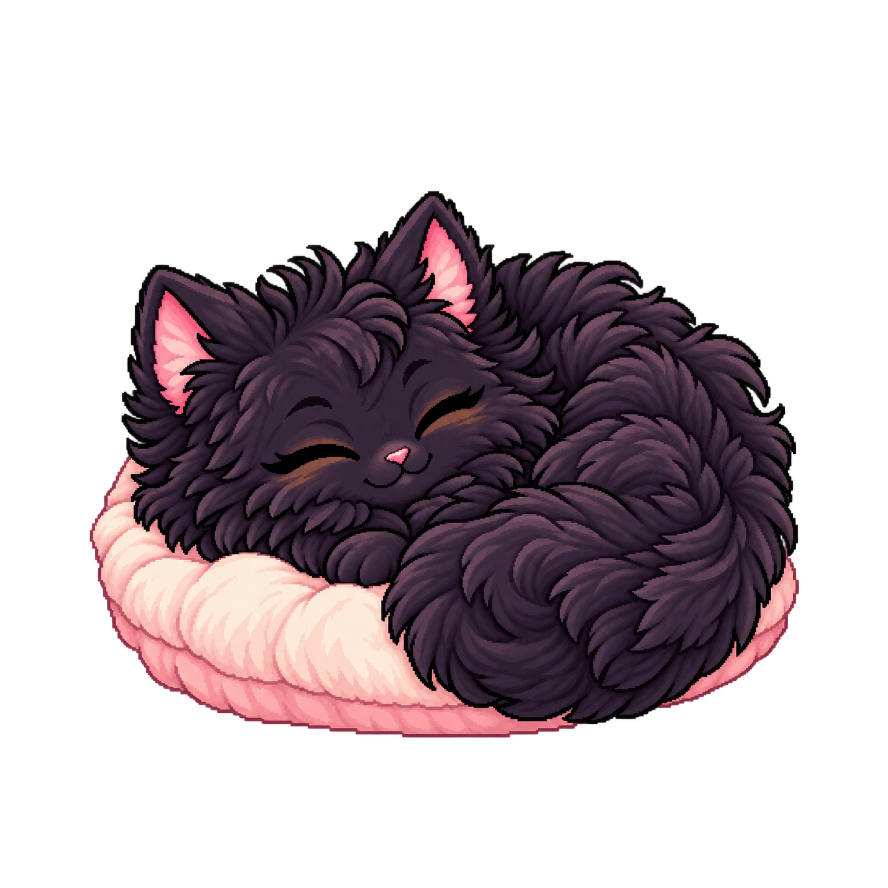
floof-cozy assets/cozy-originals/pixelbabies/floof/floof-cozy.png existing approved import; not a new motif or new individual approvalDateifloof-cozy assets/cozy-originals/pixelbabies/floof/floof-cozy.webp existing approved import; not a new motif or new individual approvalDatei
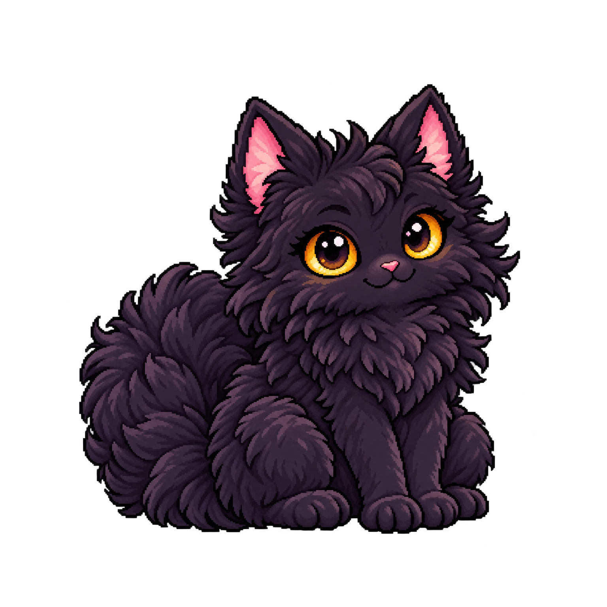
floof-default-fullbody assets/cozy-originals/pixelbabies/floof/floof-default-fullbody.png existing approved import; not a new motif or new individual approvalDateifloof-default-fullbody assets/cozy-originals/pixelbabies/floof/floof-default-fullbody.webp existing approved import; not a new motif or new individual approvalDatei
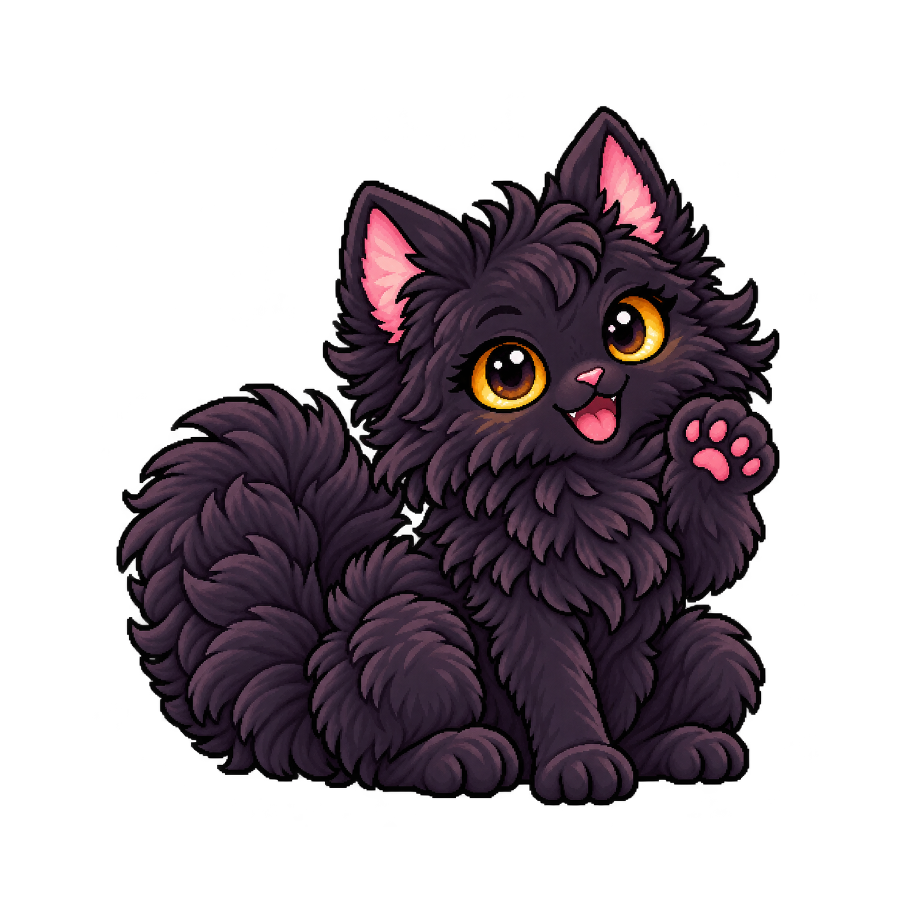
floof-happy assets/cozy-originals/pixelbabies/floof/floof-happy.png existing approved import; not a new motif or new individual approvalDateifloof-happy assets/cozy-originals/pixelbabies/floof/floof-happy.webp existing approved import; not a new motif or new individual approvalDateifloof-personality assets/cozy-originals/pixelbabies/floof/floof-personality.png existing approved import; not a new motif or new individual approvalDateifloof-personality assets/cozy-originals/pixelbabies/floof/floof-personality.webp existing approved import; not a new motif or new individual approvalDatei
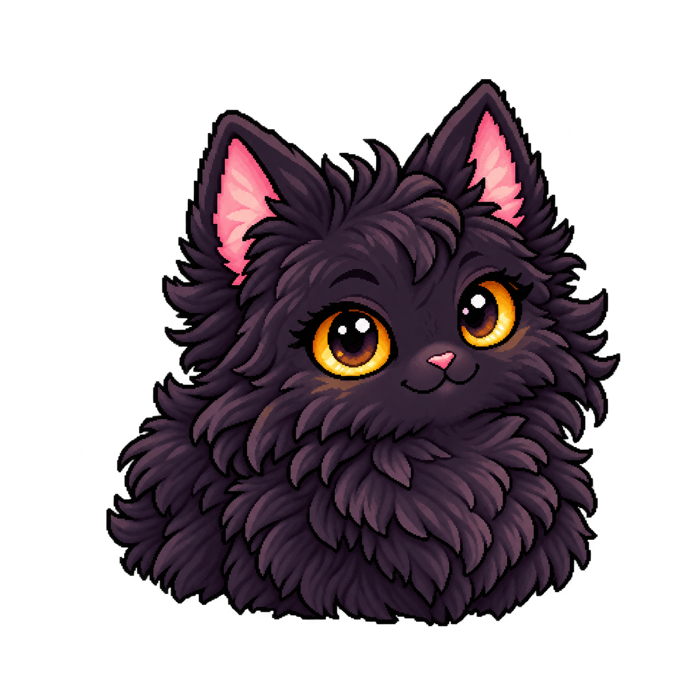
floof-portrait assets/cozy-originals/pixelbabies/floof/floof-portrait.png existing approved import; not a new motif or new individual approvalDateifloof-portrait assets/cozy-originals/pixelbabies/floof/floof-portrait.webp existing approved import; not a new motif or new individual approvalDatei
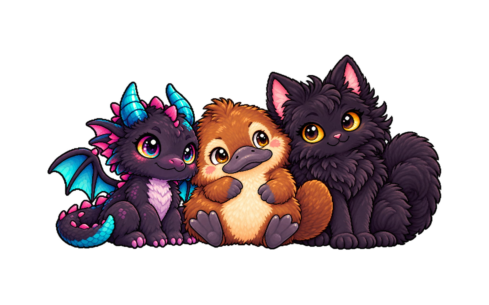
tiny-chaos-crew-group assets/cozy-originals/pixelbabies/group/tiny-chaos-crew-group.png existing approved import; not a new motif or new individual approvalDateitiny-chaos-crew-group assets/cozy-originals/pixelbabies/group/tiny-chaos-crew-group.webp existing approved import; not a new motif or new individual approvalDateinibbs-cozy assets/cozy-originals/pixelbabies/nibbs/nibbs-cozy.png existing approved import; not a new motif or new individual approvalDateinibbs-cozy assets/cozy-originals/pixelbabies/nibbs/nibbs-cozy.webp existing approved import; not a new motif or new individual approvalDateinibbs-default-fullbody assets/cozy-originals/pixelbabies/nibbs/nibbs-default-fullbody.png existing approved import; not a new motif or new individual approvalDateinibbs-default-fullbody assets/cozy-originals/pixelbabies/nibbs/nibbs-default-fullbody.webp existing approved import; not a new motif or new individual approvalDateinibbs-happy assets/cozy-originals/pixelbabies/nibbs/nibbs-happy.png existing approved import; not a new motif or new individual approvalDateinibbs-happy assets/cozy-originals/pixelbabies/nibbs/nibbs-happy.webp existing approved import; not a new motif or new individual approvalDateinibbs-personality assets/cozy-originals/pixelbabies/nibbs/nibbs-personality.png existing approved import; not a new motif or new individual approvalDateinibbs-personality assets/cozy-originals/pixelbabies/nibbs/nibbs-personality.webp existing approved import; not a new motif or new individual approvalDateinibbs-portrait assets/cozy-originals/pixelbabies/nibbs/nibbs-portrait.png existing approved import; not a new motif or new individual approvalDateinibbs-portrait assets/cozy-originals/pixelbabies/nibbs/nibbs-portrait.webp existing approved import; not a new motif or new individual approvalDateiplopp-cozy assets/cozy-originals/pixelbabies/plopp/plopp-cozy.png existing approved import; not a new motif or new individual approvalDateiplopp-cozy assets/cozy-originals/pixelbabies/plopp/plopp-cozy.webp existing approved import; not a new motif or new individual approvalDatei
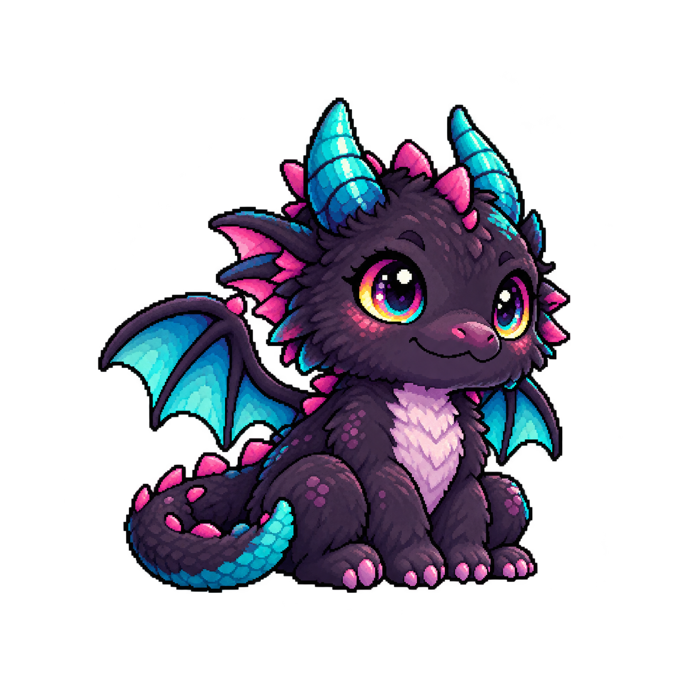
plopp-default-fullbody assets/cozy-originals/pixelbabies/plopp/plopp-default-fullbody.png existing approved import; not a new motif or new individual approvalDateiplopp-default-fullbody assets/cozy-originals/pixelbabies/plopp/plopp-default-fullbody.webp existing approved import; not a new motif or new individual approvalDatei
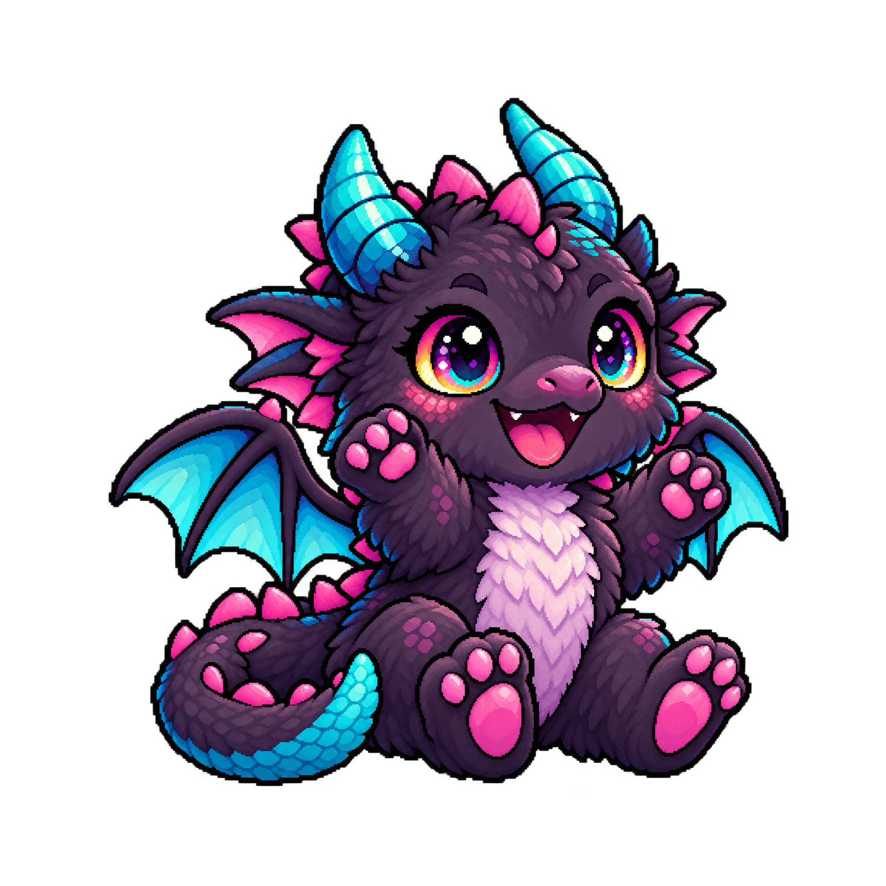
plopp-happy assets/cozy-originals/pixelbabies/plopp/plopp-happy.png existing approved import; not a new motif or new individual approvalDateiplopp-happy assets/cozy-originals/pixelbabies/plopp/plopp-happy.webp existing approved import; not a new motif or new individual approvalDateiplopp-personality assets/cozy-originals/pixelbabies/plopp/plopp-personality.png existing approved import; not a new motif or new individual approvalDateiplopp-personality assets/cozy-originals/pixelbabies/plopp/plopp-personality.webp existing approved import; not a new motif or new individual approvalDateiplopp-portrait assets/cozy-originals/pixelbabies/plopp/plopp-portrait.png existing approved import; not a new motif or new individual approvalDateiplopp-portrait assets/cozy-originals/pixelbabies/plopp/plopp-portrait.webp existing approved import; not a new motif or new individual approvalDatei06-cozy-cat-mug assets/cozy-originals/pixelkat/accessories/06-cozy-cat-mug.png existing approved import; not a new motif or new individual approvalDatei06-cozy-cat-mug assets/cozy-originals/pixelkat/accessories/06-cozy-cat-mug.webp existing approved import; not a new motif or new individual approvalDatei48-sticker-laptop assets/cozy-originals/pixelkat/accessories/48-sticker-laptop.png existing approved import; not a new motif or new individual approvalDatei48-sticker-laptop assets/cozy-originals/pixelkat/accessories/48-sticker-laptop.webp existing approved import; not a new motif or new individual approvalDatei49-cozy-notebook assets/cozy-originals/pixelkat/accessories/49-cozy-notebook.png existing approved import; not a new motif or new individual approvalDatei49-cozy-notebook assets/cozy-originals/pixelkat/accessories/49-cozy-notebook.webp existing approved import; not a new motif or new individual approvalDatei50-pink-pencil assets/cozy-originals/pixelkat/accessories/50-pink-pencil.png existing approved import; not a new motif or new individual approvalDatei50-pink-pencil assets/cozy-originals/pixelkat/accessories/50-pink-pencil.webp existing approved import; not a new motif or new individual approvalDatei51-hair-chopsticks assets/cozy-originals/pixelkat/accessories/51-hair-chopsticks.png existing approved import; not a new motif or new individual approvalDatei51-hair-chopsticks assets/cozy-originals/pixelkat/accessories/51-hair-chopsticks.webp existing approved import; not a new motif or new individual approvalDatei52-book-stack assets/cozy-originals/pixelkat/accessories/52-book-stack.png existing approved import; not a new motif or new individual approvalDatei52-book-stack assets/cozy-originals/pixelkat/accessories/52-book-stack.webp existing approved import; not a new motif or new individual approvalDatei53-fluffy-socks assets/cozy-originals/pixelkat/accessories/53-fluffy-socks.png existing approved import; not a new motif or new individual approvalDatei53-fluffy-socks assets/cozy-originals/pixelkat/accessories/53-fluffy-socks.webp existing approved import; not a new motif or new individual approvalDatei54-cat-charm assets/cozy-originals/pixelkat/accessories/54-cat-charm.png existing approved import; not a new motif or new individual approvalDatei54-cat-charm assets/cozy-originals/pixelkat/accessories/54-cat-charm.webp existing approved import; not a new motif or new individual approvalDatei55-code-symbols assets/cozy-originals/pixelkat/accessories/55-code-symbols.png existing approved import; not a new motif or new individual approvalDatei55-code-symbols assets/cozy-originals/pixelkat/accessories/55-code-symbols.webp existing approved import; not a new motif or new individual approvalDatei
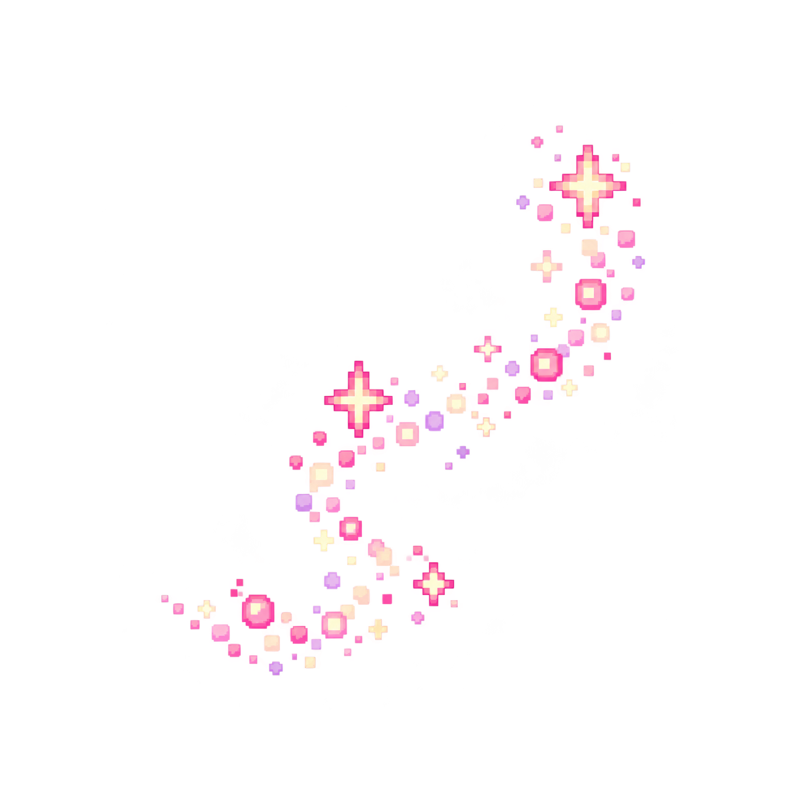
56-magic-dust assets/cozy-originals/pixelkat/accessories/56-magic-dust.png existing approved import; not a new motif or new individual approvalDatei56-magic-dust assets/cozy-originals/pixelkat/accessories/56-magic-dust.webp existing approved import; not a new motif or new individual approvalDatei57-magical-stars assets/cozy-originals/pixelkat/accessories/57-magical-stars.png existing approved import; not a new motif or new individual approvalDatei57-magical-stars assets/cozy-originals/pixelkat/accessories/57-magical-stars.webp existing approved import; not a new motif or new individual approvalDatei58-little-hearts assets/cozy-originals/pixelkat/accessories/58-little-hearts.png existing approved import; not a new motif or new individual approvalDatei58-little-hearts assets/cozy-originals/pixelkat/accessories/58-little-hearts.webp existing approved import; not a new motif or new individual approvalDatei
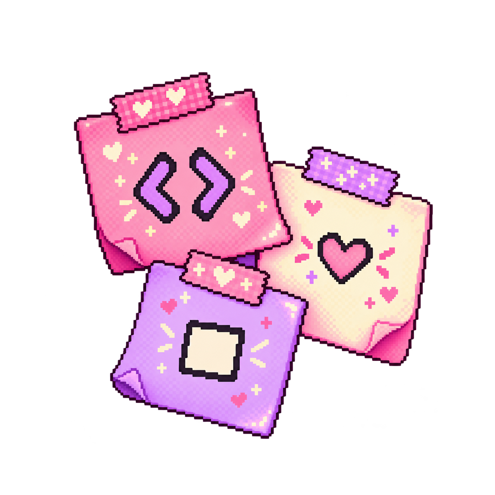
59-project-sticky-notes assets/cozy-originals/pixelkat/accessories/59-project-sticky-notes.png existing approved import; not a new motif or new individual approvalDatei59-project-sticky-notes assets/cozy-originals/pixelkat/accessories/59-project-sticky-notes.webp existing approved import; not a new motif or new individual approvalDatei60-idea-bulb assets/cozy-originals/pixelkat/accessories/60-idea-bulb.png existing approved import; not a new motif or new individual approvalDatei60-idea-bulb assets/cozy-originals/pixelkat/accessories/60-idea-bulb.webp existing approved import; not a new motif or new individual approvalDatei01-default-fullbody assets/cozy-originals/pixelkat/core/01-default-fullbody.png existing approved import; not a new motif or new individual approvalDatei01-default-fullbody assets/cozy-originals/pixelkat/core/01-default-fullbody.webp existing approved import; not a new motif or new individual approvalDatei02-default-portrait assets/cozy-originals/pixelkat/core/02-default-portrait.png existing approved import; not a new motif or new individual approvalDatei02-default-portrait assets/cozy-originals/pixelkat/core/02-default-portrait.webp existing approved import; not a new motif or new individual approvalDatei07-messy-bun-fullbody assets/cozy-originals/pixelkat/core/07-messy-bun-fullbody.png existing approved import; not a new motif or new individual approvalDatei07-messy-bun-fullbody assets/cozy-originals/pixelkat/core/07-messy-bun-fullbody.webp existing approved import; not a new motif or new individual approvalDatei08-braids-fullbody assets/cozy-originals/pixelkat/core/08-braids-fullbody.png existing approved import; not a new motif or new individual approvalDatei08-braids-fullbody assets/cozy-originals/pixelkat/core/08-braids-fullbody.webp existing approved import; not a new motif or new individual approvalDatei09-cozy-standing assets/cozy-originals/pixelkat/core/09-cozy-standing.png existing approved import; not a new motif or new individual approvalDatei09-cozy-standing assets/cozy-originals/pixelkat/core/09-cozy-standing.webp existing approved import; not a new motif or new individual approvalDatei10-seated-knees assets/cozy-originals/pixelkat/core/10-seated-knees.png existing approved import; not a new motif or new individual approvalDatei10-seated-knees assets/cozy-originals/pixelkat/core/10-seated-knees.webp existing approved import; not a new motif or new individual approvalDatei38-fennel-tea-moment assets/cozy-originals/pixelkat/cozy/38-fennel-tea-moment.png existing approved import; not a new motif or new individual approvalDatei38-fennel-tea-moment assets/cozy-originals/pixelkat/cozy/38-fennel-tea-moment.webp existing approved import; not a new motif or new individual approvalDatei39-blanket-burrito assets/cozy-originals/pixelkat/cozy/39-blanket-burrito.png existing approved import; not a new motif or new individual approvalDatei39-blanket-burrito assets/cozy-originals/pixelkat/cozy/39-blanket-burrito.webp existing approved import; not a new motif or new individual approvalDatei40-hood-up assets/cozy-originals/pixelkat/cozy/40-hood-up.png existing approved import; not a new motif or new individual approvalDatei40-hood-up assets/cozy-originals/pixelkat/cozy/40-hood-up.webp existing approved import; not a new motif or new individual approvalDatei41-fluffy-cushion assets/cozy-originals/pixelkat/cozy/41-fluffy-cushion.png existing approved import; not a new motif or new individual approvalDatei41-fluffy-cushion assets/cozy-originals/pixelkat/cozy/41-fluffy-cushion.webp existing approved import; not a new motif or new individual approvalDatei42-cozy-book assets/cozy-originals/pixelkat/cozy/42-cozy-book.png existing approved import; not a new motif or new individual approvalDatei42-cozy-book assets/cozy-originals/pixelkat/cozy/42-cozy-book.webp existing approved import; not a new motif or new individual approvalDatei43-cross-legged-rest assets/cozy-originals/pixelkat/cozy/43-cross-legged-rest.png existing approved import; not a new motif or new individual approvalDatei43-cross-legged-rest assets/cozy-originals/pixelkat/cozy/43-cross-legged-rest.webp existing approved import; not a new motif or new individual approvalDatei44-stretching-break assets/cozy-originals/pixelkat/cozy/44-stretching-break.png existing approved import; not a new motif or new individual approvalDatei44-stretching-break assets/cozy-originals/pixelkat/cozy/44-stretching-break.webp existing approved import; not a new motif or new individual approvalDatei45-sock-soles assets/cozy-originals/pixelkat/cozy/45-sock-soles.png existing approved import; not a new motif or new individual approvalDatei45-sock-soles assets/cozy-originals/pixelkat/cozy/45-sock-soles.webp existing approved import; not a new motif or new individual approvalDatei46-cozy-blanket assets/cozy-originals/pixelkat/cozy/46-cozy-blanket.png existing approved import; not a new motif or new individual approvalDatei46-cozy-blanket assets/cozy-originals/pixelkat/cozy/46-cozy-blanket.webp existing approved import; not a new motif or new individual approvalDatei47-sleepy-morning assets/cozy-originals/pixelkat/cozy/47-sleepy-morning.png existing approved import; not a new motif or new individual approvalDatei47-sleepy-morning assets/cozy-originals/pixelkat/cozy/47-sleepy-morning.webp existing approved import; not a new motif or new individual approvalDatei05-hyperfocus-laptop assets/cozy-originals/pixelkat/development/05-hyperfocus-laptop.png existing approved import; not a new motif or new individual approvalDatei05-hyperfocus-laptop assets/cozy-originals/pixelkat/development/05-hyperfocus-laptop.webp existing approved import; not a new motif or new individual approvalDatei27-programming assets/cozy-originals/pixelkat/development/27-programming.png existing approved import; not a new motif or new individual approvalDatei27-programming assets/cozy-originals/pixelkat/development/27-programming.webp existing approved import; not a new motif or new individual approvalDatei28-debugging assets/cozy-originals/pixelkat/development/28-debugging.png existing approved import; not a new motif or new individual approvalDatei28-debugging assets/cozy-originals/pixelkat/development/28-debugging.webp existing approved import; not a new motif or new individual approvalDatei29-error-message assets/cozy-originals/pixelkat/development/29-error-message.png existing approved import; not a new motif or new individual approvalDatei29-error-message assets/cozy-originals/pixelkat/development/29-error-message.webp existing approved import; not a new motif or new individual approvalDatei30-learning assets/cozy-originals/pixelkat/development/30-learning.png existing approved import; not a new motif or new individual approvalDatei30-learning assets/cozy-originals/pixelkat/development/30-learning.webp existing approved import; not a new motif or new individual approvalDatei31-documentation assets/cozy-originals/pixelkat/development/31-documentation.png existing approved import; not a new motif or new individual approvalDatei31-documentation assets/cozy-originals/pixelkat/development/31-documentation.webp existing approved import; not a new motif or new individual approvalDatei32-notebook-writing assets/cozy-originals/pixelkat/development/32-notebook-writing.png existing approved import; not a new motif or new individual approvalDatei32-notebook-writing assets/cozy-originals/pixelkat/development/32-notebook-writing.webp existing approved import; not a new motif or new individual approvalDatei33-bug-discovery assets/cozy-originals/pixelkat/development/33-bug-discovery.png existing approved import; not a new motif or new individual approvalDatei33-bug-discovery assets/cozy-originals/pixelkat/development/33-bug-discovery.webp existing approved import; not a new motif or new individual approvalDatei34-working-code assets/cozy-originals/pixelkat/development/34-working-code.png existing approved import; not a new motif or new individual approvalDatei34-working-code assets/cozy-originals/pixelkat/development/34-working-code.webp existing approved import; not a new motif or new individual approvalDatei35-project-idea assets/cozy-originals/pixelkat/development/35-project-idea.png existing approved import; not a new motif or new individual approvalDatei35-project-idea assets/cozy-originals/pixelkat/development/35-project-idea.webp existing approved import; not a new motif or new individual approvalDatei36-project-notes assets/cozy-originals/pixelkat/development/36-project-notes.png existing approved import; not a new motif or new individual approvalDatei36-project-notes assets/cozy-originals/pixelkat/development/36-project-notes.webp existing approved import; not a new motif or new individual approvalDatei37-coding-chaos assets/cozy-originals/pixelkat/development/37-coding-chaos.png existing approved import; not a new motif or new individual approvalDatei37-coding-chaos assets/cozy-originals/pixelkat/development/37-coding-chaos.webp existing approved import; not a new motif or new individual approvalDatei03-excited-new-idea assets/cozy-originals/pixelkat/emotions/03-excited-new-idea.png existing approved import; not a new motif or new individual approvalDatei03-excited-new-idea assets/cozy-originals/pixelkat/emotions/03-excited-new-idea.webp existing approved import; not a new motif or new individual approvalDatei04-sleepy assets/cozy-originals/pixelkat/emotions/04-sleepy.png existing approved import; not a new motif or new individual approvalDatei04-sleepy assets/cozy-originals/pixelkat/emotions/04-sleepy.webp existing approved import; not a new motif or new individual approvalDatei11-happy assets/cozy-originals/pixelkat/emotions/11-happy.png existing approved import; not a new motif or new individual approvalDatei11-happy assets/cozy-originals/pixelkat/emotions/11-happy.webp existing approved import; not a new motif or new individual approvalDatei12-hyperfocus assets/cozy-originals/pixelkat/emotions/12-hyperfocus.png existing approved import; not a new motif or new individual approvalDatei12-hyperfocus assets/cozy-originals/pixelkat/emotions/12-hyperfocus.webp existing approved import; not a new motif or new individual approvalDatei13-overwhelmed assets/cozy-originals/pixelkat/emotions/13-overwhelmed.png existing approved import; not a new motif or new individual approvalDatei13-overwhelmed assets/cozy-originals/pixelkat/emotions/13-overwhelmed.webp existing approved import; not a new motif or new individual approvalDatei14-confused assets/cozy-originals/pixelkat/emotions/14-confused.png existing approved import; not a new motif or new individual approvalDatei14-confused assets/cozy-originals/pixelkat/emotions/14-confused.webp existing approved import; not a new motif or new individual approvalDatei15-surprised assets/cozy-originals/pixelkat/emotions/15-surprised.png existing approved import; not a new motif or new individual approvalDatei15-surprised assets/cozy-originals/pixelkat/emotions/15-surprised.webp existing approved import; not a new motif or new individual approvalDatei16-proud assets/cozy-originals/pixelkat/emotions/16-proud.png existing approved import; not a new motif or new individual approvalDatei16-proud assets/cozy-originals/pixelkat/emotions/16-proud.webp existing approved import; not a new motif or new individual approvalDatei17-success assets/cozy-originals/pixelkat/emotions/17-success.png existing approved import; not a new motif or new individual approvalDatei17-success assets/cozy-originals/pixelkat/emotions/17-success.webp existing approved import; not a new motif or new individual approvalDatei18-frustrated assets/cozy-originals/pixelkat/emotions/18-frustrated.png existing approved import; not a new motif or new individual approvalDatei18-frustrated assets/cozy-originals/pixelkat/emotions/18-frustrated.webp existing approved import; not a new motif or new individual approvalDatei19-thinking assets/cozy-originals/pixelkat/emotions/19-thinking.png existing approved import; not a new motif or new individual approvalDatei19-thinking assets/cozy-originals/pixelkat/emotions/19-thinking.webp existing approved import; not a new motif or new individual approvalDatei20-curious assets/cozy-originals/pixelkat/emotions/20-curious.png existing approved import; not a new motif or new individual approvalDatei20-curious assets/cozy-originals/pixelkat/emotions/20-curious.webp existing approved import; not a new motif or new individual approvalDatei21-low-battery assets/cozy-originals/pixelkat/emotions/21-low-battery.png existing approved import; not a new motif or new individual approvalDatei21-low-battery assets/cozy-originals/pixelkat/emotions/21-low-battery.webp existing approved import; not a new motif or new individual approvalDatei22-new-idea assets/cozy-originals/pixelkat/emotions/22-new-idea.png existing approved import; not a new motif or new individual approvalDatei22-new-idea assets/cozy-originals/pixelkat/emotions/22-new-idea.webp existing approved import; not a new motif or new individual approvalDatei23-oops assets/cozy-originals/pixelkat/emotions/23-oops.png existing approved import; not a new motif or new individual approvalDatei23-oops assets/cozy-originals/pixelkat/emotions/23-oops.webp existing approved import; not a new motif or new individual approvalDatei24-help assets/cozy-originals/pixelkat/emotions/24-help.png existing approved import; not a new motif or new individual approvalDatei24-help assets/cozy-originals/pixelkat/emotions/24-help.webp existing approved import; not a new motif or new individual approvalDatei25-ahhhh assets/cozy-originals/pixelkat/emotions/25-ahhhh.png existing approved import; not a new motif or new individual approvalDatei25-ahhhh assets/cozy-originals/pixelkat/emotions/25-ahhhh.webp existing approved import; not a new motif or new individual approvalDatei26-cozy-mode assets/cozy-originals/pixelkat/emotions/26-cozy-mode.png existing approved import; not a new motif or new individual approvalDatei26-cozy-mode assets/cozy-originals/pixelkat/emotions/26-cozy-mode.webp existing approved import; not a new motif or new individual approvalDateicrew-coding assets/cozy-originals/scenes/crew-coding.png D01 explicitly personally approvedDateicrew-coding assets/cozy-originals/scenes/crew-coding.webp D01 explicitly personally approvedDateipixelkat.web-about-me assets/cozy-originals/website/pixelkat.web-about-me.png existing approved import; not a new motif or new individual approvalDateipixelkat.web-about-me assets/cozy-originals/website/pixelkat.web-about-me.webp existing approved import; not a new motif or new individual approvalDateipixelkat.web-coming-soon assets/cozy-originals/website/pixelkat.web-coming-soon.png existing approved import; not a new motif or new individual approvalDateipixelkat.web-coming-soon assets/cozy-originals/website/pixelkat.web-coming-soon.webp existing approved import; not a new motif or new individual approvalDateipixelkat.web-empty-state assets/cozy-originals/website/pixelkat.web-empty-state.png existing approved import; not a new motif or new individual approvalDateipixelkat.web-empty-state assets/cozy-originals/website/pixelkat.web-empty-state.webp existing approved import; not a new motif or new individual approvalDateipixelkat.web-error-state assets/cozy-originals/website/pixelkat.web-error-state.png existing approved import; not a new motif or new individual approvalDateipixelkat.web-error-state assets/cozy-originals/website/pixelkat.web-error-state.webp existing approved import; not a new motif or new individual approvalDateipixelkat.web-footer-easter-egg assets/cozy-originals/website/pixelkat.web-footer-easter-egg.png existing approved import; not a new motif or new individual approvalDateipixelkat.web-footer-easter-egg assets/cozy-originals/website/pixelkat.web-footer-easter-egg.webp existing approved import; not a new motif or new individual approvalDateipixelkat.web-hero assets/cozy-originals/website/pixelkat.web-hero.png existing approved import; not a new motif or new individual approvalDateipixelkat.web-hero assets/cozy-originals/website/pixelkat.web-hero.webp existing approved import; not a new motif or new individual approvalDateipixelkat.web-learning-area assets/cozy-originals/website/pixelkat.web-learning-area.png existing approved import; not a new motif or new individual approvalDateipixelkat.web-learning-area assets/cozy-originals/website/pixelkat.web-learning-area.webp existing approved import; not a new motif or new individual approvalDateipixelkat.web-loading assets/cozy-originals/website/pixelkat.web-loading.png existing approved import; not a new motif or new individual approvalDateipixelkat.web-loading assets/cozy-originals/website/pixelkat.web-loading.webp existing approved import; not a new motif or new individual approvalDateipixelkat.web-project-card assets/cozy-originals/website/pixelkat.web-project-card.png existing approved import; not a new motif or new individual approvalDateipixelkat.web-project-card assets/cozy-originals/website/pixelkat.web-project-card.webp existing approved import; not a new motif or new individual approvalDateipixelkat.web-success-state assets/cozy-originals/website/pixelkat.web-success-state.png existing approved import; not a new motif or new individual approvalDateipixelkat.web-success-state assets/cozy-originals/website/pixelkat.web-success-state.webp existing approved import; not a new motif or new individual approvalDateicute_cozy-desk-lamp-128 assets/library-extension/motifs/cute_cozy-desk-lamp-128.png existing production output; confirmed branding integration, individual extra artwork acceptance not assertedDateicute_cozy-desk-lamp-256 assets/library-extension/motifs/cute_cozy-desk-lamp-256.png existing production output; confirmed branding integration, individual extra artwork acceptance not assertedDateicute_cozy-desk-lamp-512 assets/library-extension/motifs/cute_cozy-desk-lamp-512.png existing production output; confirmed branding integration, individual extra artwork acceptance not assertedDateicute_cozy-desk-lamp assets/library-extension/motifs/cute_cozy-desk-lamp.png existing production output; confirmed branding integration, individual extra artwork acceptance not assertedDateicute_cozy-desk-lamp assets/library-extension/motifs/cute_cozy-desk-lamp.svg existing production output; confirmed branding integration, individual extra artwork acceptance not assertedDateicute_cozy-desk-lamp assets/library-extension/motifs/cute_cozy-desk-lamp.webp existing production output; confirmed branding integration, individual extra artwork acceptance not assertedDateicute_cozy-flower-notes-128 assets/library-extension/motifs/cute_cozy-flower-notes-128.png existing production output; confirmed branding integration, individual extra artwork acceptance not assertedDateicute_cozy-flower-notes-256 assets/library-extension/motifs/cute_cozy-flower-notes-256.png existing production output; confirmed branding integration, individual extra artwork acceptance not assertedDateicute_cozy-flower-notes-512 assets/library-extension/motifs/cute_cozy-flower-notes-512.png existing production output; confirmed branding integration, individual extra artwork acceptance not assertedDateicute_cozy-flower-notes assets/library-extension/motifs/cute_cozy-flower-notes.png existing production output; confirmed branding integration, individual extra artwork acceptance not assertedDateicute_cozy-flower-notes assets/library-extension/motifs/cute_cozy-flower-notes.svg existing production output; confirmed branding integration, individual extra artwork acceptance not assertedDateicute_cozy-flower-notes assets/library-extension/motifs/cute_cozy-flower-notes.webp existing production output; confirmed branding integration, individual extra artwork acceptance not assertedDateicute_cozy-heart-cushion-128 assets/library-extension/motifs/cute_cozy-heart-cushion-128.png existing production output; confirmed branding integration, individual extra artwork acceptance not assertedDateicute_cozy-heart-cushion-256 assets/library-extension/motifs/cute_cozy-heart-cushion-256.png existing production output; confirmed branding integration, individual extra artwork acceptance not assertedDateicute_cozy-heart-cushion-512 assets/library-extension/motifs/cute_cozy-heart-cushion-512.png existing production output; confirmed branding integration, individual extra artwork acceptance not assertedDateicute_cozy-heart-cushion assets/library-extension/motifs/cute_cozy-heart-cushion.png existing production output; confirmed branding integration, individual extra artwork acceptance not assertedDateicute_cozy-heart-cushion assets/library-extension/motifs/cute_cozy-heart-cushion.svg existing production output; confirmed branding integration, individual extra artwork acceptance not assertedDateicute_cozy-heart-cushion assets/library-extension/motifs/cute_cozy-heart-cushion.webp existing production output; confirmed branding integration, individual extra artwork acceptance not assertedDatei
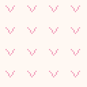
cute_cozy-knit-tile-128 assets/library-extension/motifs/cute_cozy-knit-tile-128.png existing production output; confirmed branding integration, individual extra artwork acceptance not assertedDatei
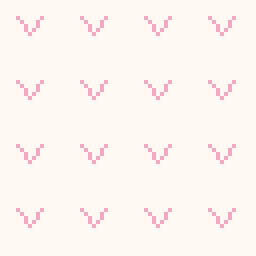
cute_cozy-knit-tile-256 assets/library-extension/motifs/cute_cozy-knit-tile-256.png existing production output; confirmed branding integration, individual extra artwork acceptance not assertedDatei
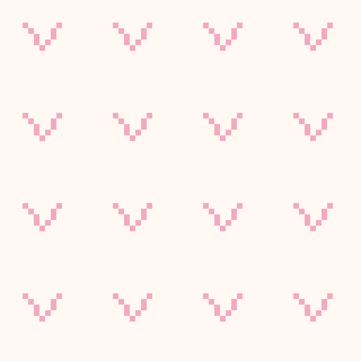
cute_cozy-knit-tile-512 assets/library-extension/motifs/cute_cozy-knit-tile-512.png existing production output; confirmed branding integration, individual extra artwork acceptance not assertedDateicute_cozy-knit-tile assets/library-extension/motifs/cute_cozy-knit-tile.png existing production output; confirmed branding integration, individual extra artwork acceptance not assertedDateicute_cozy-knit-tile assets/library-extension/motifs/cute_cozy-knit-tile.svg existing production output; confirmed branding integration, individual extra artwork acceptance not assertedDateicute_cozy-knit-tile assets/library-extension/motifs/cute_cozy-knit-tile.webp existing production output; confirmed branding integration, individual extra artwork acceptance not assertedDateicute_cozy-plant-128 assets/library-extension/motifs/cute_cozy-plant-128.png existing production output; confirmed branding integration, individual extra artwork acceptance not assertedDateicute_cozy-plant-256 assets/library-extension/motifs/cute_cozy-plant-256.png existing production output; confirmed branding integration, individual extra artwork acceptance not assertedDatei
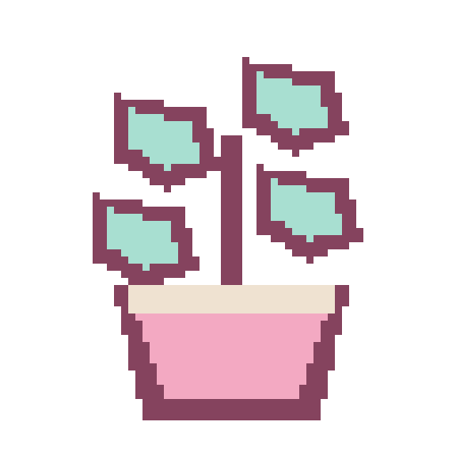
cute_cozy-plant-512 assets/library-extension/motifs/cute_cozy-plant-512.png existing production output; confirmed branding integration, individual extra artwork acceptance not assertedDateicute_cozy-plant assets/library-extension/motifs/cute_cozy-plant.png existing production output; confirmed branding integration, individual extra artwork acceptance not assertedDateicute_cozy-plant assets/library-extension/motifs/cute_cozy-plant.svg existing production output; confirmed branding integration, individual extra artwork acceptance not assertedDateicute_cozy-plant assets/library-extension/motifs/cute_cozy-plant.webp existing production output; confirmed branding integration, individual extra artwork acceptance not assertedDateicute_cozy-stitched-frame-128 assets/library-extension/motifs/cute_cozy-stitched-frame-128.png existing production output; confirmed branding integration, individual extra artwork acceptance not assertedDatei
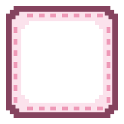
cute_cozy-stitched-frame-256 assets/library-extension/motifs/cute_cozy-stitched-frame-256.png existing production output; confirmed branding integration, individual extra artwork acceptance not assertedDatei
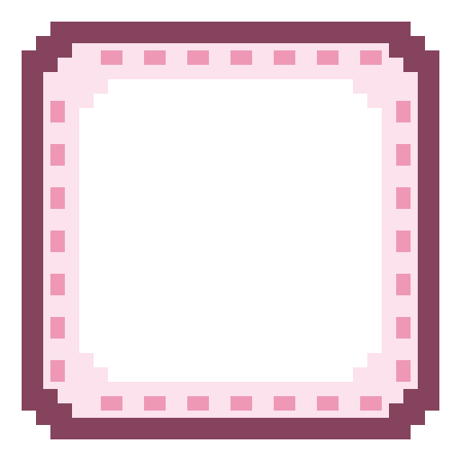
cute_cozy-stitched-frame-512 assets/library-extension/motifs/cute_cozy-stitched-frame-512.png existing production output; confirmed branding integration, individual extra artwork acceptance not assertedDatei
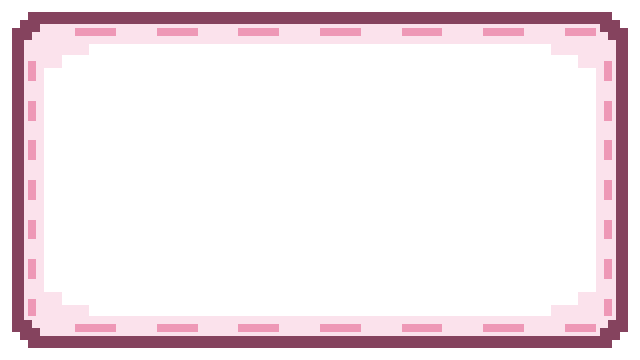
cute_cozy-stitched-frame-9slice-640x360 assets/library-extension/motifs/cute_cozy-stitched-frame-9slice-640x360.png existing production output; confirmed branding integration, individual extra artwork acceptance not assertedDatei
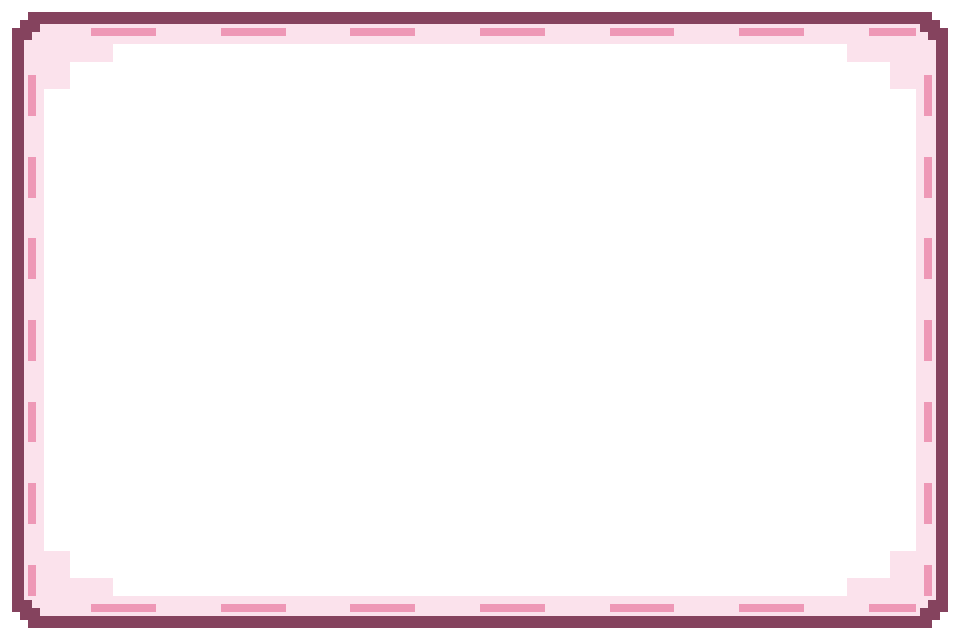
cute_cozy-stitched-frame-9slice-960x640 assets/library-extension/motifs/cute_cozy-stitched-frame-9slice-960x640.png existing production output; confirmed branding integration, individual extra artwork acceptance not assertedDateicute_cozy-stitched-frame assets/library-extension/motifs/cute_cozy-stitched-frame.png existing production output; confirmed branding integration, individual extra artwork acceptance not assertedDateicute_cozy-stitched-frame assets/library-extension/motifs/cute_cozy-stitched-frame.svg existing production output; confirmed branding integration, individual extra artwork acceptance not assertedDateicute_cozy-stitched-frame assets/library-extension/motifs/cute_cozy-stitched-frame.webp existing production output; confirmed branding integration, individual extra artwork acceptance not assertedDateicute_cozy-tea-tray-128 assets/library-extension/motifs/cute_cozy-tea-tray-128.png existing production output; confirmed branding integration, individual extra artwork acceptance not assertedDateicute_cozy-tea-tray-256 assets/library-extension/motifs/cute_cozy-tea-tray-256.png existing production output; confirmed branding integration, individual extra artwork acceptance not assertedDateicute_cozy-tea-tray-512 assets/library-extension/motifs/cute_cozy-tea-tray-512.png existing production output; confirmed branding integration, individual extra artwork acceptance not assertedDateicute_cozy-tea-tray assets/library-extension/motifs/cute_cozy-tea-tray.png existing production output; confirmed branding integration, individual extra artwork acceptance not assertedDateicute_cozy-tea-tray assets/library-extension/motifs/cute_cozy-tea-tray.svg existing production output; confirmed branding integration, individual extra artwork acceptance not assertedDateicute_cozy-tea-tray assets/library-extension/motifs/cute_cozy-tea-tray.webp existing production output; confirmed branding integration, individual extra artwork acceptance not assertedDateicute_cozy-window-128 assets/library-extension/motifs/cute_cozy-window-128.png existing production output; confirmed branding integration, individual extra artwork acceptance not assertedDatei
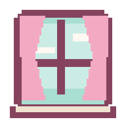
cute_cozy-window-256 assets/library-extension/motifs/cute_cozy-window-256.png existing production output; confirmed branding integration, individual extra artwork acceptance not assertedDateicute_cozy-window-512 assets/library-extension/motifs/cute_cozy-window-512.png existing production output; confirmed branding integration, individual extra artwork acceptance not assertedDateicute_cozy-window assets/library-extension/motifs/cute_cozy-window.png existing production output; confirmed branding integration, individual extra artwork acceptance not assertedDateicute_cozy-window assets/library-extension/motifs/cute_cozy-window.svg existing production output; confirmed branding integration, individual extra artwork acceptance not assertedDateicute_cozy-window assets/library-extension/motifs/cute_cozy-window.webp existing production output; confirmed branding integration, individual extra artwork acceptance not assertedDateicute-cozy-crew-tea-planning-1024 assets/library-extension/scenes/cute-cozy-crew-tea-planning-1024.png existing production output; confirmed branding integration, individual extra artwork acceptance not assertedDateicute-cozy-crew-tea-planning-512 assets/library-extension/scenes/cute-cozy-crew-tea-planning-512.png existing production output; confirmed branding integration, individual extra artwork acceptance not assertedDatei
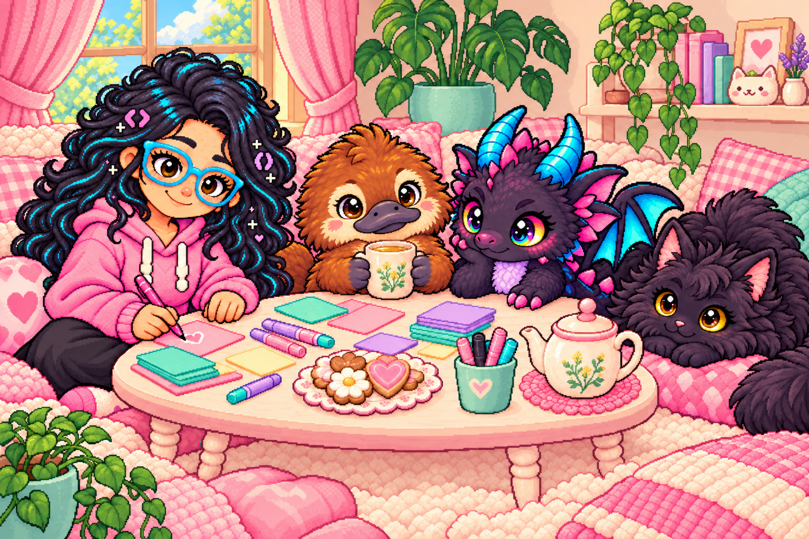
cute-cozy-crew-tea-planning assets/library-extension/scenes/cute-cozy-crew-tea-planning.png existing production output; confirmed branding integration, individual extra artwork acceptance not assertedDateicute-cozy-crew-tea-planning assets/library-extension/scenes/cute-cozy-crew-tea-planning.webp existing production output; confirmed branding integration, individual extra artwork acceptance not assertedDatei
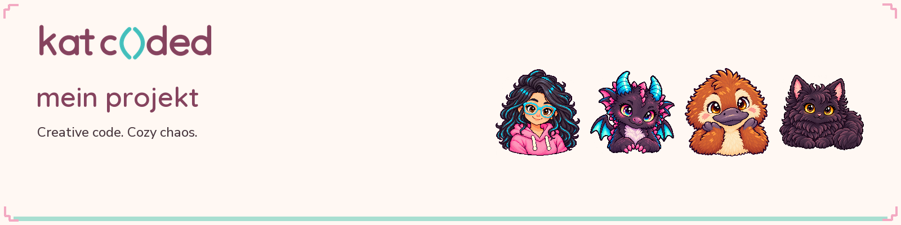
profile-header-cute_cozy assets/library-extension/templates/profile-header-cute_cozy.png existing production output; confirmed branding integration, individual extra artwork acceptance not assertedDateiprofile-header-cute_cozy assets/library-extension/templates/profile-header-cute_cozy.webp existing production output; confirmed branding integration, individual extra artwork acceptance not assertedDatei
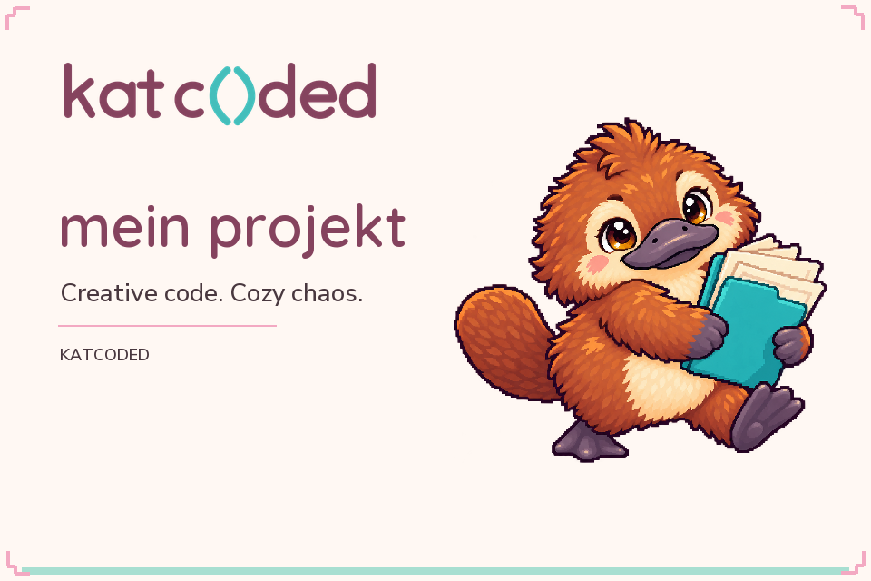
project-card-cute_cozy assets/library-extension/templates/project-card-cute_cozy.png existing production output; confirmed branding integration, individual extra artwork acceptance not assertedDateiproject-card-cute_cozy assets/library-extension/templates/project-card-cute_cozy.webp existing production output; confirmed branding integration, individual extra artwork acceptance not assertedDateiproject-cover-cute_cozy assets/library-extension/templates/project-cover-cute_cozy.png existing production output; confirmed branding integration, individual extra artwork acceptance not assertedDatei
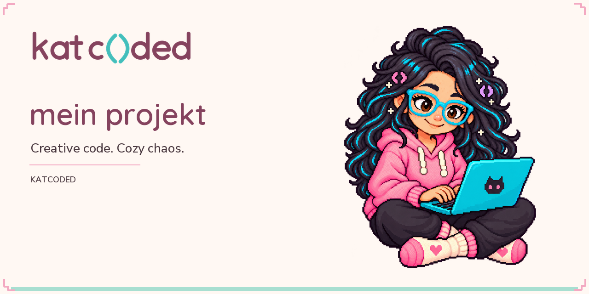
project-cover-cute_cozy assets/library-extension/templates/project-cover-cute_cozy.webp existing production output; confirmed branding integration, individual extra artwork acceptance not assertedDatei
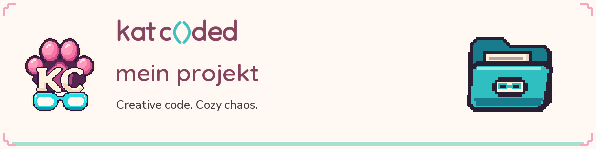
readme-header-cute_cozy assets/library-extension/templates/readme-header-cute_cozy.png existing production output; confirmed branding integration, individual extra artwork acceptance not assertedDateireadme-header-cute_cozy assets/library-extension/templates/readme-header-cute_cozy.webp existing production output; confirmed branding integration, individual extra artwork acceptance not assertedDatei
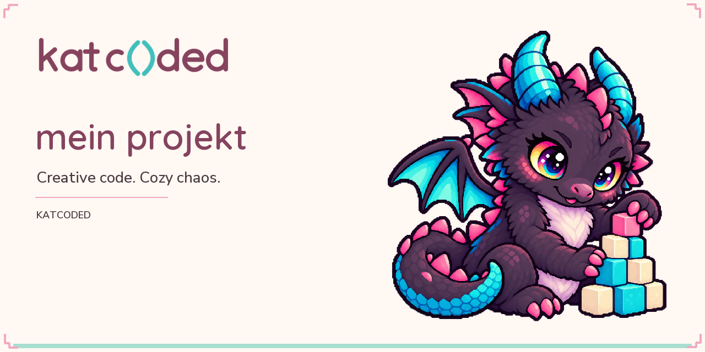
repo-social-cute_cozy assets/library-extension/templates/repo-social-cute_cozy.png existing production output; confirmed branding integration, individual extra artwork acceptance not assertedDateirepo-social-cute_cozy assets/library-extension/templates/repo-social-cute_cozy.webp existing production output; confirmed branding integration, individual extra artwork acceptance not assertedDateiwordmark brand/wordmark.svg approved UI v0.1 geometry + approved Cozy focus/disabled; carried by v0.4Dateiapp-floof-dark-1024 branding/app-floof-dark-1024.png logo basis approved in library; branding integration confirmed by current user; no independent favicon approval inferredDateiapp-floof-dark-128 branding/app-floof-dark-128.png logo basis approved in library; branding integration confirmed by current user; no independent favicon approval inferredDateiapp-floof-dark-192 branding/app-floof-dark-192.png logo basis approved in library; branding integration confirmed by current user; no independent favicon approval inferredDateiapp-floof-dark branding/app-floof-dark.png logo basis approved in library; branding integration confirmed by current user; no independent favicon approval inferredDateiapp-floof-dark branding/app-floof-dark.svg logo basis approved in library; branding integration confirmed by current user; no independent favicon approval inferredDateiapp-floof-dark branding/app-floof-dark.webp logo basis approved in library; branding integration confirmed by current user; no independent favicon approval inferredDateiapp-floof-light-1024 branding/app-floof-light-1024.png logo basis approved in library; branding integration confirmed by current user; no independent favicon approval inferredDateiapp-floof-light-128 branding/app-floof-light-128.png logo basis approved in library; branding integration confirmed by current user; no independent favicon approval inferredDateiapp-floof-light-192 branding/app-floof-light-192.png logo basis approved in library; branding integration confirmed by current user; no independent favicon approval inferredDateiapp-floof-light branding/app-floof-light.png logo basis approved in library; branding integration confirmed by current user; no independent favicon approval inferredDateiapp-floof-light branding/app-floof-light.svg logo basis approved in library; branding integration confirmed by current user; no independent favicon approval inferredDateiapp-floof-light branding/app-floof-light.webp logo basis approved in library; branding integration confirmed by current user; no independent favicon approval inferredDateiapp-nibbs-dark-1024 branding/app-nibbs-dark-1024.png logo basis approved in library; branding integration confirmed by current user; no independent favicon approval inferredDateiapp-nibbs-dark-128 branding/app-nibbs-dark-128.png logo basis approved in library; branding integration confirmed by current user; no independent favicon approval inferredDateiapp-nibbs-dark-192 branding/app-nibbs-dark-192.png logo basis approved in library; branding integration confirmed by current user; no independent favicon approval inferredDateiapp-nibbs-dark branding/app-nibbs-dark.png logo basis approved in library; branding integration confirmed by current user; no independent favicon approval inferredDateiapp-nibbs-dark branding/app-nibbs-dark.svg logo basis approved in library; branding integration confirmed by current user; no independent favicon approval inferredDateiapp-nibbs-dark branding/app-nibbs-dark.webp logo basis approved in library; branding integration confirmed by current user; no independent favicon approval inferredDateiapp-nibbs-light-1024 branding/app-nibbs-light-1024.png logo basis approved in library; branding integration confirmed by current user; no independent favicon approval inferredDateiapp-nibbs-light-128 branding/app-nibbs-light-128.png logo basis approved in library; branding integration confirmed by current user; no independent favicon approval inferredDateiapp-nibbs-light-192 branding/app-nibbs-light-192.png logo basis approved in library; branding integration confirmed by current user; no independent favicon approval inferredDateiapp-nibbs-light branding/app-nibbs-light.png logo basis approved in library; branding integration confirmed by current user; no independent favicon approval inferredDateiapp-nibbs-light branding/app-nibbs-light.svg logo basis approved in library; branding integration confirmed by current user; no independent favicon approval inferredDateiapp-nibbs-light branding/app-nibbs-light.webp logo basis approved in library; branding integration confirmed by current user; no independent favicon approval inferredDateiapp-plopp-dark-1024 branding/app-plopp-dark-1024.png logo basis approved in library; branding integration confirmed by current user; no independent favicon approval inferredDateiapp-plopp-dark-128 branding/app-plopp-dark-128.png logo basis approved in library; branding integration confirmed by current user; no independent favicon approval inferredDateiapp-plopp-dark-192 branding/app-plopp-dark-192.png logo basis approved in library; branding integration confirmed by current user; no independent favicon approval inferredDateiapp-plopp-dark branding/app-plopp-dark.png logo basis approved in library; branding integration confirmed by current user; no independent favicon approval inferredDateiapp-plopp-dark branding/app-plopp-dark.svg logo basis approved in library; branding integration confirmed by current user; no independent favicon approval inferredDateiapp-plopp-dark branding/app-plopp-dark.webp logo basis approved in library; branding integration confirmed by current user; no independent favicon approval inferredDateiapp-plopp-light-1024 branding/app-plopp-light-1024.png logo basis approved in library; branding integration confirmed by current user; no independent favicon approval inferredDateiapp-plopp-light-128 branding/app-plopp-light-128.png logo basis approved in library; branding integration confirmed by current user; no independent favicon approval inferredDateiapp-plopp-light-192 branding/app-plopp-light-192.png logo basis approved in library; branding integration confirmed by current user; no independent favicon approval inferredDateiapp-plopp-light branding/app-plopp-light.png logo basis approved in library; branding integration confirmed by current user; no independent favicon approval inferredDateiapp-plopp-light branding/app-plopp-light.svg logo basis approved in library; branding integration confirmed by current user; no independent favicon approval inferredDateiapp-plopp-light branding/app-plopp-light.webp logo basis approved in library; branding integration confirmed by current user; no independent favicon approval inferredDateicompact-floof-dark branding/compact-floof-dark.png logo basis approved in library; branding integration confirmed by current user; no independent favicon approval inferredDatei
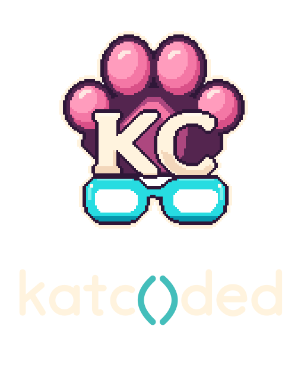
compact-floof-dark branding/compact-floof-dark.svg logo basis approved in library; branding integration confirmed by current user; no independent favicon approval inferredDateicompact-floof-dark branding/compact-floof-dark.webp logo basis approved in library; branding integration confirmed by current user; no independent favicon approval inferredDatei
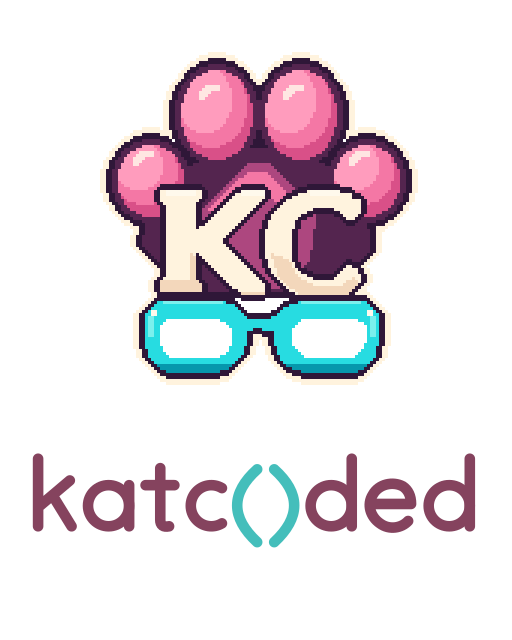
compact-floof-light branding/compact-floof-light.png logo basis approved in library; branding integration confirmed by current user; no independent favicon approval inferredDateicompact-floof-light branding/compact-floof-light.svg logo basis approved in library; branding integration confirmed by current user; no independent favicon approval inferredDateicompact-floof-light branding/compact-floof-light.webp logo basis approved in library; branding integration confirmed by current user; no independent favicon approval inferredDatei
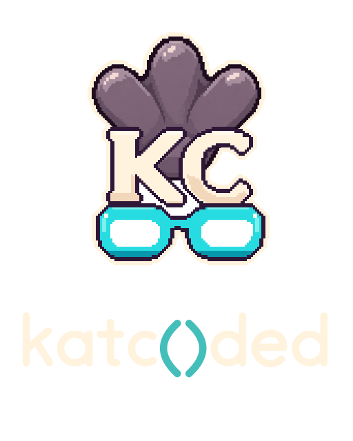
compact-nibbs-dark branding/compact-nibbs-dark.png logo basis approved in library; branding integration confirmed by current user; no independent favicon approval inferredDateicompact-nibbs-dark branding/compact-nibbs-dark.svg logo basis approved in library; branding integration confirmed by current user; no independent favicon approval inferredDateicompact-nibbs-dark branding/compact-nibbs-dark.webp logo basis approved in library; branding integration confirmed by current user; no independent favicon approval inferredDateicompact-nibbs-light branding/compact-nibbs-light.png logo basis approved in library; branding integration confirmed by current user; no independent favicon approval inferredDatei
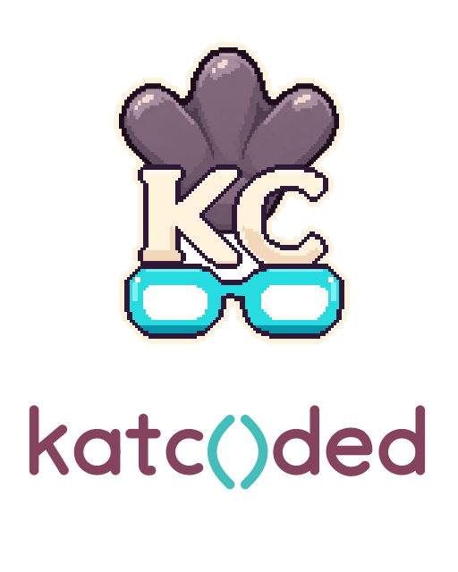
compact-nibbs-light branding/compact-nibbs-light.svg logo basis approved in library; branding integration confirmed by current user; no independent favicon approval inferredDateicompact-nibbs-light branding/compact-nibbs-light.webp logo basis approved in library; branding integration confirmed by current user; no independent favicon approval inferredDateicompact-plopp-dark branding/compact-plopp-dark.png logo basis approved in library; branding integration confirmed by current user; no independent favicon approval inferredDatei
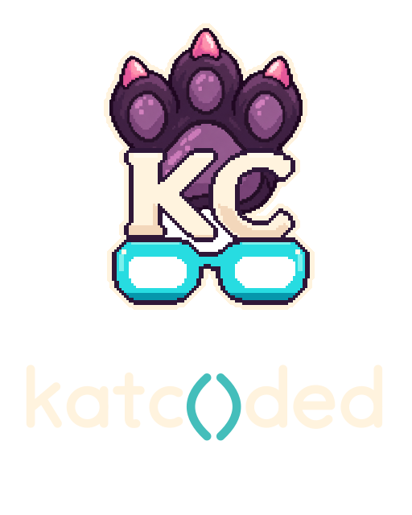
compact-plopp-dark branding/compact-plopp-dark.svg logo basis approved in library; branding integration confirmed by current user; no independent favicon approval inferredDateicompact-plopp-dark branding/compact-plopp-dark.webp logo basis approved in library; branding integration confirmed by current user; no independent favicon approval inferredDateicompact-plopp-light branding/compact-plopp-light.png logo basis approved in library; branding integration confirmed by current user; no independent favicon approval inferredDateicompact-plopp-light branding/compact-plopp-light.svg logo basis approved in library; branding integration confirmed by current user; no independent favicon approval inferredDateicompact-plopp-light branding/compact-plopp-light.webp logo basis approved in library; branding integration confirmed by current user; no independent favicon approval inferredDateihorizontal-floof-dark branding/horizontal-floof-dark.png logo basis approved in library; branding integration confirmed by current user; no independent favicon approval inferredDateihorizontal-floof-dark branding/horizontal-floof-dark.svg logo basis approved in library; branding integration confirmed by current user; no independent favicon approval inferredDateihorizontal-floof-dark branding/horizontal-floof-dark.webp logo basis approved in library; branding integration confirmed by current user; no independent favicon approval inferredDateihorizontal-floof-light branding/horizontal-floof-light.png logo basis approved in library; branding integration confirmed by current user; no independent favicon approval inferredDateihorizontal-floof-light branding/horizontal-floof-light.svg logo basis approved in library; branding integration confirmed by current user; no independent favicon approval inferredDateihorizontal-floof-light branding/horizontal-floof-light.webp logo basis approved in library; branding integration confirmed by current user; no independent favicon approval inferredDateihorizontal-nibbs-dark branding/horizontal-nibbs-dark.png logo basis approved in library; branding integration confirmed by current user; no independent favicon approval inferredDateihorizontal-nibbs-dark branding/horizontal-nibbs-dark.svg logo basis approved in library; branding integration confirmed by current user; no independent favicon approval inferredDatei
horizontal-nibbs-dark branding/horizontal-nibbs-dark.webp logo basis approved in library; branding integration confirmed by current user; no independent favicon approval inferredDateihorizontal-nibbs-light branding/horizontal-nibbs-light.png logo basis approved in library; branding integration confirmed by current user; no independent favicon approval inferredDateihorizontal-nibbs-light branding/horizontal-nibbs-light.svg logo basis approved in library; branding integration confirmed by current user; no independent favicon approval inferredDateihorizontal-nibbs-light branding/horizontal-nibbs-light.webp logo basis approved in library; branding integration confirmed by current user; no independent favicon approval inferredDateihorizontal-plopp-dark branding/horizontal-plopp-dark.png logo basis approved in library; branding integration confirmed by current user; no independent favicon approval inferredDateihorizontal-plopp-dark branding/horizontal-plopp-dark.svg logo basis approved in library; branding integration confirmed by current user; no independent favicon approval inferredDateihorizontal-plopp-dark branding/horizontal-plopp-dark.webp logo basis approved in library; branding integration confirmed by current user; no independent favicon approval inferredDateihorizontal-plopp-light branding/horizontal-plopp-light.png logo basis approved in library; branding integration confirmed by current user; no independent favicon approval inferredDateihorizontal-plopp-light branding/horizontal-plopp-light.svg logo basis approved in library; branding integration confirmed by current user; no independent favicon approval inferredDateihorizontal-plopp-light branding/horizontal-plopp-light.webp logo basis approved in library; branding integration confirmed by current user; no independent favicon approval inferredDateikc-glasses branding/kc-glasses.png logo basis approved in library; branding integration confirmed by current user; no independent favicon approval inferredDateikc-glasses branding/kc-glasses.svg logo basis approved in library; branding integration confirmed by current user; no independent favicon approval inferredDateikc-glasses branding/kc-glasses.webp logo basis approved in library; branding integration confirmed by current user; no independent favicon approval inferredDateikc-glasses@4x branding/kc-glasses@4x.png logo basis approved in library; branding integration confirmed by current user; no independent favicon approval inferredDateikc-glasses@8x branding/kc-glasses@8x.png logo basis approved in library; branding integration confirmed by current user; no independent favicon approval inferredDateikc-monochrome-dark branding/kc-monochrome-dark.png logo basis approved in library; branding integration confirmed by current user; no independent favicon approval inferredDateikc-monochrome-dark branding/kc-monochrome-dark.svg logo basis approved in library; branding integration confirmed by current user; no independent favicon approval inferredDateikc-monochrome-dark branding/kc-monochrome-dark.webp logo basis approved in library; branding integration confirmed by current user; no independent favicon approval inferredDateikc-monochrome-dark@4x branding/kc-monochrome-dark@4x.png logo basis approved in library; branding integration confirmed by current user; no independent favicon approval inferredDateikc-monochrome-dark@8x branding/kc-monochrome-dark@8x.png logo basis approved in library; branding integration confirmed by current user; no independent favicon approval inferredDateikc-monochrome-light branding/kc-monochrome-light.png logo basis approved in library; branding integration confirmed by current user; no independent favicon approval inferredDateikc-monochrome-light branding/kc-monochrome-light.svg logo basis approved in library; branding integration confirmed by current user; no independent favicon approval inferredDateikc-monochrome-light branding/kc-monochrome-light.webp logo basis approved in library; branding integration confirmed by current user; no independent favicon approval inferredDateikc-monochrome-light@4x branding/kc-monochrome-light@4x.png logo basis approved in library; branding integration confirmed by current user; no independent favicon approval inferredDateikc-monochrome-light@8x branding/kc-monochrome-light@8x.png logo basis approved in library; branding integration confirmed by current user; no independent favicon approval inferredDateikc-monogram branding/kc-monogram.png logo basis approved in library; branding integration confirmed by current user; no independent favicon approval inferredDateikc-monogram branding/kc-monogram.svg logo basis approved in library; branding integration confirmed by current user; no independent favicon approval inferredDateikc-monogram branding/kc-monogram.webp logo basis approved in library; branding integration confirmed by current user; no independent favicon approval inferredDateikc-monogram@4x branding/kc-monogram@4x.png logo basis approved in library; branding integration confirmed by current user; no independent favicon approval inferredDateikc-monogram@8x branding/kc-monogram@8x.png logo basis approved in library; branding integration confirmed by current user; no independent favicon approval inferredDateilogo-128 branding/logos/floof/logo-128.png logo basis approved in library; branding integration confirmed by current user; no independent favicon approval inferredDateilogo-1536 branding/logos/floof/logo-1536.png logo basis approved in library; branding integration confirmed by current user; no independent favicon approval inferredDateilogo-1536 branding/logos/floof/logo-1536.webp logo basis approved in library; branding integration confirmed by current user; no independent favicon approval inferredDateilogo-512 branding/logos/floof/logo-512.png logo basis approved in library; branding integration confirmed by current user; no independent favicon approval inferredDateimaster branding/logos/floof/master.svg logo basis approved in library; branding integration confirmed by current user; no independent favicon approval inferredDateilogo-128 branding/logos/nibbs/logo-128.png logo basis approved in library; branding integration confirmed by current user; no independent favicon approval inferredDateilogo-1536 branding/logos/nibbs/logo-1536.png logo basis approved in library; branding integration confirmed by current user; no independent favicon approval inferredDateilogo-1536 branding/logos/nibbs/logo-1536.webp logo basis approved in library; branding integration confirmed by current user; no independent favicon approval inferredDateilogo-512 branding/logos/nibbs/logo-512.png logo basis approved in library; branding integration confirmed by current user; no independent favicon approval inferredDateimaster branding/logos/nibbs/master.svg logo basis approved in library; branding integration confirmed by current user; no independent favicon approval inferredDateilogo-128 branding/logos/plopp/logo-128.png logo basis approved in library; branding integration confirmed by current user; no independent favicon approval inferredDateilogo-1536 branding/logos/plopp/logo-1536.png logo basis approved in library; branding integration confirmed by current user; no independent favicon approval inferredDateilogo-1536 branding/logos/plopp/logo-1536.webp logo basis approved in library; branding integration confirmed by current user; no independent favicon approval inferredDateilogo-512 branding/logos/plopp/logo-512.png logo basis approved in library; branding integration confirmed by current user; no independent favicon approval inferredDateimaster branding/logos/plopp/master.svg logo basis approved in library; branding integration confirmed by current user; no independent favicon approval inferredDateiwordmark-dark branding/wordmark-dark.png logo basis approved in library; branding integration confirmed by current user; no independent favicon approval inferredDateiwordmark-dark branding/wordmark-dark.svg logo basis approved in library; branding integration confirmed by current user; no independent favicon approval inferredDateiwordmark-dark branding/wordmark-dark.webp logo basis approved in library; branding integration confirmed by current user; no independent favicon approval inferredDateiwordmark-light branding/wordmark-light.png logo basis approved in library; branding integration confirmed by current user; no independent favicon approval inferredDateiwordmark-light branding/wordmark-light.svg logo basis approved in library; branding integration confirmed by current user; no independent favicon approval inferredDateiwordmark-light branding/wordmark-light.webp logo basis approved in library; branding integration confirmed by current user; no independent favicon approval inferredDateiaccent decorations/accent.svg approved UI v0.1 geometry + approved Cozy focus/disabled; carried by v0.4Dateidivider decorations/divider.svg approved UI v0.1 geometry + approved Cozy focus/disabled; carried by v0.4Datei